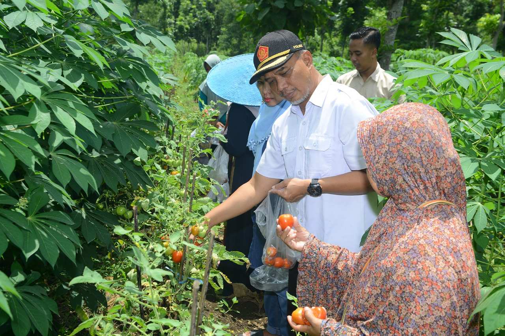
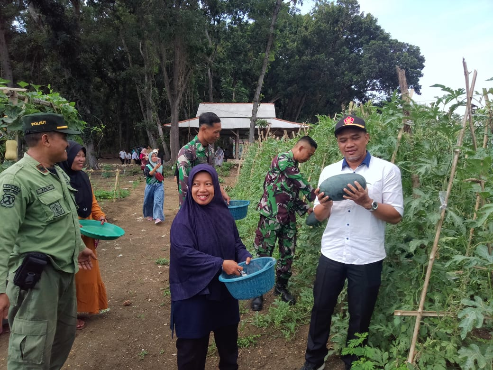
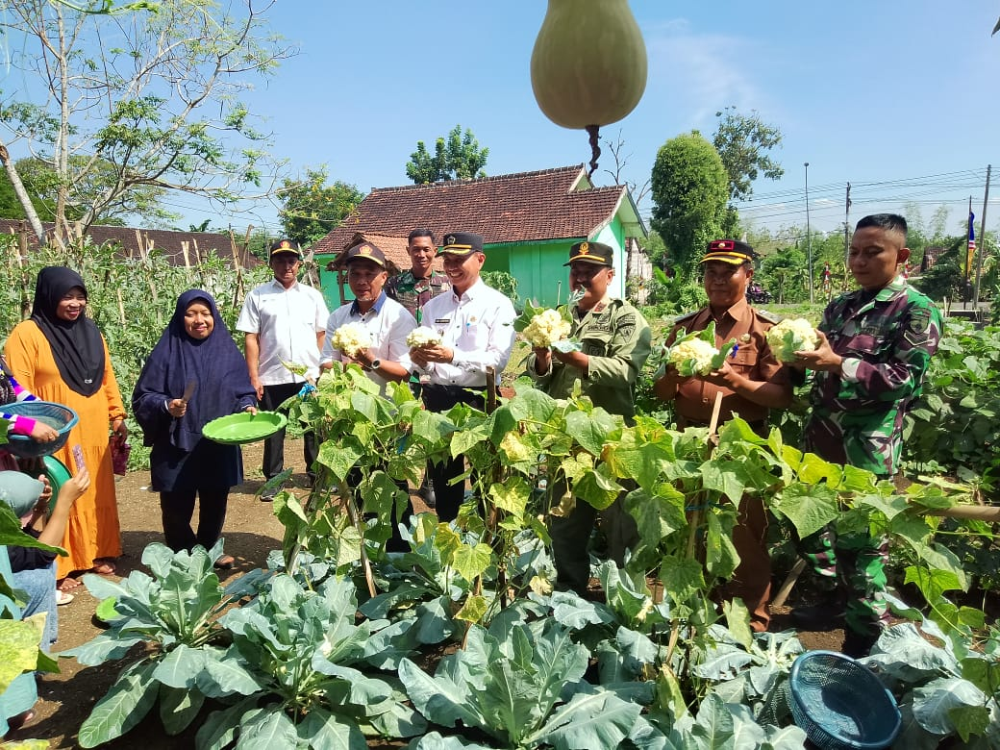
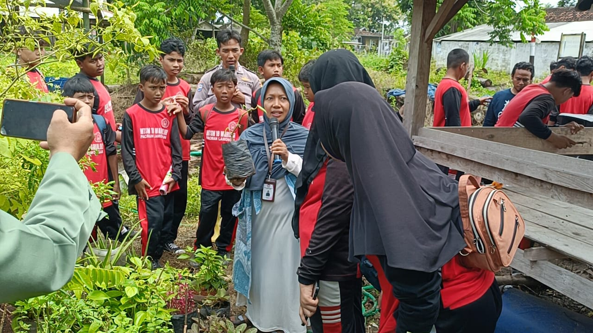
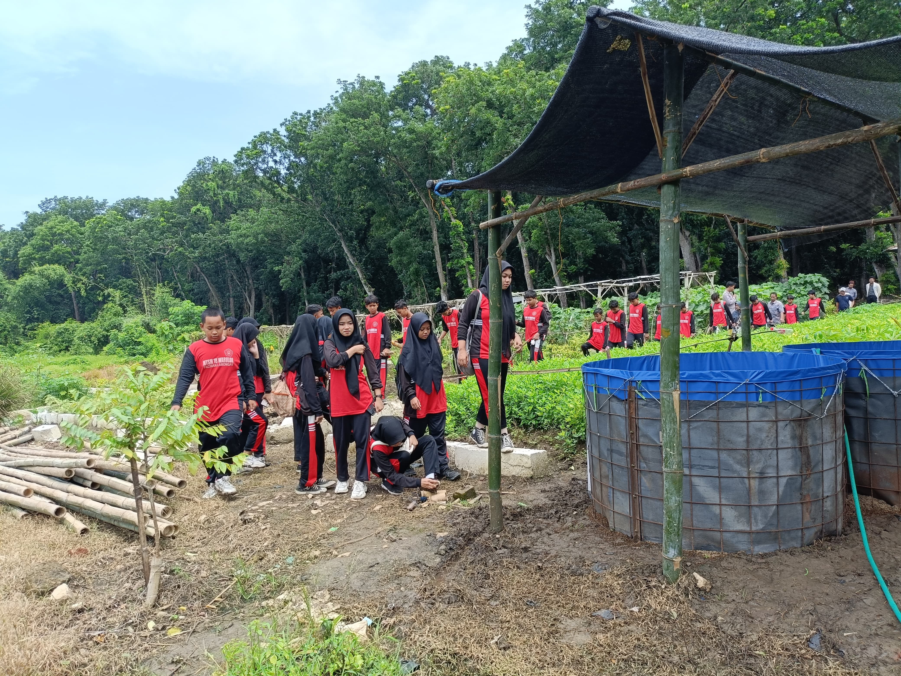
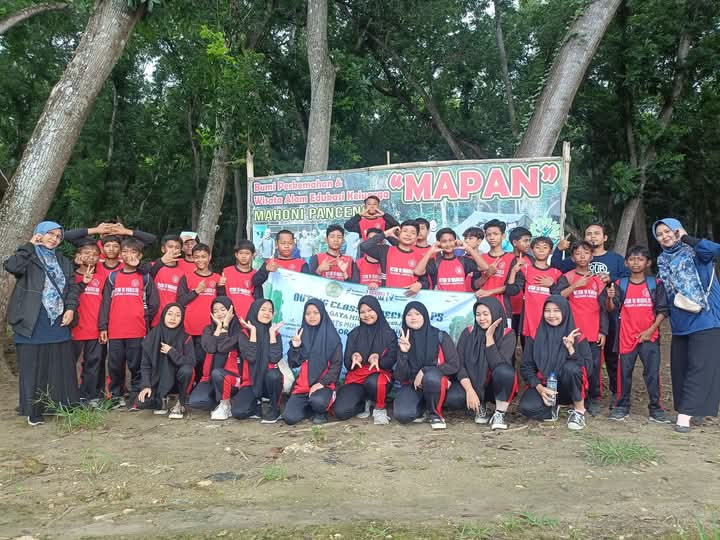
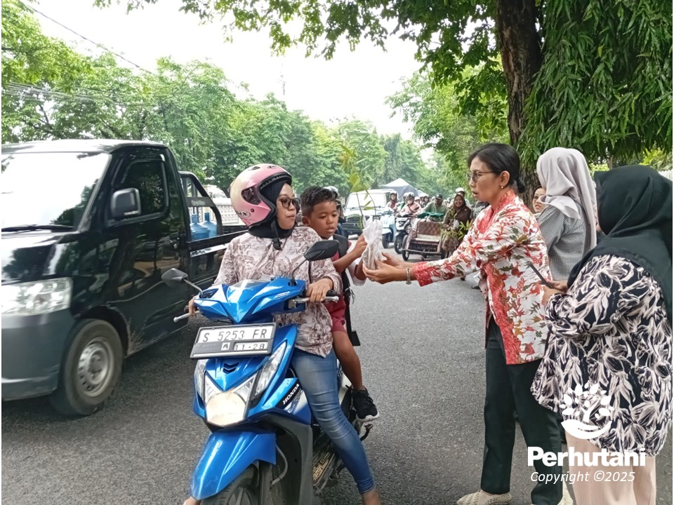
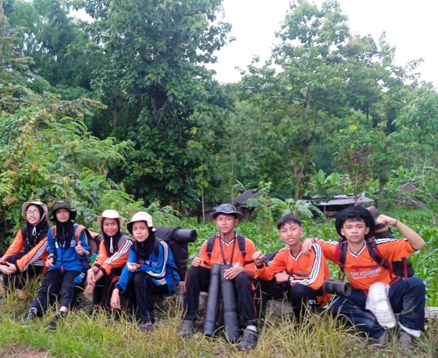
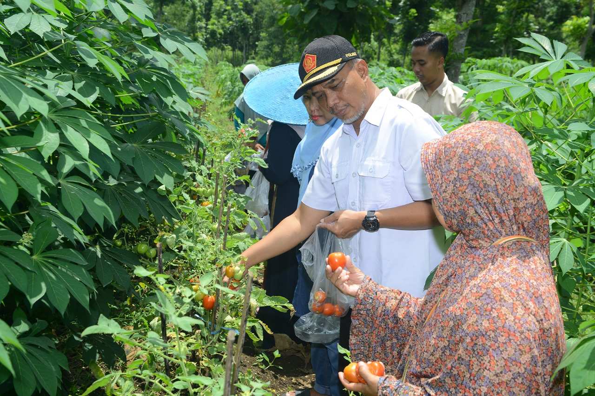
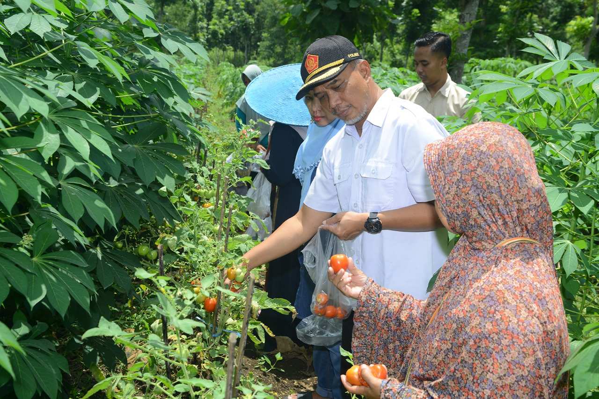

Panen Perdana di Kebun Edukasi Panceng, Paguyuban Perempuan Berhasil Hijaukan Lahan DK

Paguyuban Perempuan Panceng menggelar panen perdana aneka sayur dan buah-buahan di Kebun Edukasi Hijau, Rabu (7/8). Lahan yang sebelumnya kosong di sisi utara Bumi Perkemahan Mahoni Panceng ini berhasil dikelola menjadi kebun produktif, sekaligus menjadi upaya pemberdayaan masyarakat sekitar kawasan hutan.
Kegiatan ini dihadiri sejumlah pejabat, seperti Administratur Perhutani Tuban, Bayu Nugroho; Waka Administrasi Tuban Timur, Chaidir; Camat Panceng, Sampurno; dan Ketua Paguyuban Perempuan Panceng, Sri Kurniasih, beserta anggota lainnya. Dalam sambutannya, Bayu Nugroho menyampaikan dukungannya terhadap inisiatif tersebut.
“Mengubah lahan tidak produktif menjadi kebun hijau yang bermanfaat adalah langkah besar untuk memberdayakan masyarakat,” ungkap Bayu.
Sri Kurniasih menambahkan bahwa kebun ini tidak hanya untuk kebutuhan pangan, tetapi juga difungsikan sebagai sarana edukasi bagi siswa dari berbagai jenjang pendidikan. Ia juga menyampaikan rencana untuk menambah tanaman Multi-Purpose Tree Species (MPTS) di kebun tersebut.
Camat Panceng, Sampurno, mengapresiasi keberhasilan Paguyuban Perempuan Panceng dalam menghijaukan lingkungan dan memanfaatkan lahan kosong. Ia juga menegaskan dukungan pemerintah kecamatan dalam menyediakan sarana dan prasarana untuk keberlanjutan program ini.
Panen perdana ini menjadi bukti sinergi antara masyarakat, Perhutani, dan pemerintah dalam menjaga kelestarian lingkungan sekaligus meningkatkan kesejahteraan masyarakat.


Mts M 18 Waru Lor Paciran Gelar Giat P5 dan Outing Class di Lahan Edukasi Perhutani Panceng

Dalam upaya terbaru untuk konservasi, Perhutani telah meluncurkan sebuah program yang bertujuan untuk meningkatkan kesadaran dan partisipasi masyarakat dalam pelestarian hutan. Program ini melibatkan pendidikan masyarakat lokal dan pengembangan infrastruktur yang ramah lingkungan di sekitar kawasan hutan.
Kegiatan konservasi ini ditandai dengan penanaman seribu pohon di wilayah hutan lindung, dihadiri oleh sejumlah pejabat dan aktivis lingkungan. Inisiatif ini tidak hanya membantu dalam memperbaiki kondisi lingkungan tetapi juga mendukung kehidupan sosial ekonomi masyarakat sekitar.
“Kami berkomitmen untuk terus mendorong dan mendukung kegiatan yang memperkuat konservasi dan pengelolaan sumber daya hutan secara berkelanjutan,” ujar Bayu Nugroho, Administratur Perhutani. serta menyampaikan
bahwa lahan edukasi Perhutani Panceng terbuka untuk sekolah mana pun yang membutuhkan yang saat ini tanpa di pungut biaya apapun.


Sedekah Oksigen KPH Tuban Giat Membagikan Bibit Tanaman ke Pengguna Jalan

Masalah Lingkungan dan Solusi Melalui Penanaman Pohon
Krisis air, banjir, polusi udara, dan perubahan cuaca yang tidak menentu merupakan masalah serius yang dihadapi masyarakat saat ini. Salah satu solusi untuk mengatasi semua masalah ini adalah dengan menanam pohon. Namun, masih banyak orang yang belum menyadari manfaat penting dari pohon dan kurangnya kepedulian terhadap lingkungan.
Pohon sering disebut sebagai sumber kehidupan, sehingga tidak heran jika dikatakan bahwa "sahabat sejati bumi adalah pohon." Dalam salah satu hadis disebutkan, "Tak seorang pun muslim yang menanam pohon atau menabur benih tanaman lalu (setelah tumbuh) dimakan oleh burung, manusia, atau hewan lainnya, kecuali akan menjadi sedekah baginya" (HR. Al-Bukhari).
Kegiatan Penanaman Pohon oleh Perhutani Tuban
Di awal tahun 2025, Bayu Nugroho, sebagai Administrator (ADM) Perhutani Tuban, bersama jajarannya, mengadakan kegiatan membagikan bibit pohon kepada pengguna jalan di depan kantor Perhutani Tuban, yang terletak di Jalan Raya Gajah Mada no 12, Kelurahan Kebon Sari, Kecamatan Tuban, Kabupaten Tuban, Jawa Timur pada Kamis, 02 Januari 2025.
Sekitar 250 bibit pohon dibagikan, yang terdiri dari Multy Purpose Tree Species (MPTS), termasuk jenis-jenis seperti Kayu Putih, Nangka, Sirsak, Jambu Mete, dan Alpukat.
Harapan untuk Masa Depan
Bayu Nugroho berharap bahwa kegiatan ini dapat dijadikan contoh dan menumbuhkan rasa cinta untuk menanam pohon, sehingga masalah yang berkaitan dengan lingkungan dapat diatasi. Semua karyawan Perhutani Tuban yang terlibat dalam kegiatan tersebut menunjukkan semangat yang tinggi saat membagikan bibit, dan banyak pengendara yang lewat menerima bibit dengan antusias.
Sebagai penutup, mari kita ingat, "Jangan warisi anak cucu kita dengan air mata, tetapi warisilah mereka dengan mata air."
Isi Liburan Akhir Tahun SMK Assa'adah Bungah Gresik Giat DIKLAT SAR di Hutan Panceng

Hutan Gudang Ilmu dan Inspirasi untuk Generasi Muda
Hutan adalah sumber ilmu pengetahuan yang tak ternilai. Keanekaragaman hayati dan fauna di dalamnya menjadi inspirasi bagi berbagai penelitian di bidang medis maupun non-medis. Oleh karena itu, menanamkan jiwa rimbawan pada generasi muda menjadi langkah penting untuk memastikan kelestarian alam di masa depan.
Sebagai upaya menumbuhkan kecintaan terhadap alam, siswa-siswi Sekolah Menengah Kejuruan (SMK) Assa’adah Bungah Gresik
memanfaatkan liburan akhir tahun 2024-2025 dengan mengikuti Pendidikan dan Pelatihan Dasar (Diklatsar) SAR di Hutan Panceng. Kegiatan ini berlangsung dalam suasana cuaca mendung yang disertai gerimis, namun tidak mengurangi semangat para peserta untuk menjelajahi hutan dan mempelajari berbagai keterampilan penting.
Pelatihan Bertahan Hidup di Hutan
Dalam Diklatsar SAR ini, peserta diberikan pelatihan mengenai langkah-langkah penting untuk bertahan hidup saat tersesat di hutan. Materi yang diberikan meliputi:
Menyiapkan mental agar tidak panik ketika menghadapi situasi darurat.
Cara mencari air dan makanan yang aman untuk dikonsumsi di hutan.
Teknik mencari bantuan di situasi sulit.
Eko Rahmat Subekti, selaku ketua pelaksana kegiatan,
menekankan pentingnya mengutamakan keselamatan dan melakukan persiapan matang sebelum menjelajahi hutan.
"Pastikan kesehatan dan perlengkapan kita siap ketika akan menjelajahi hutan. Cuaca bisa berubah sewaktu-waktu, dan ada banyak hal yang tidak terduga yang mungkin terjadi," ujar Eko.
Pengalaman Seru dan Berharga
Salah satu peserta, Muhammad Ridwan, bersama teman-temannya mengaku sangat antusias
mengikuti kegiatan ini. "Banyak ilmu pengetahuan dan pengalaman baru yang saya dapatkan bersama teman-teman. Selain itu, saya juga jadi lebih tahu tentang keadaan hutan dan serunya berpetualang di sana," pungkas Ridwan.
Menumbuhkan Cinta Alam Sejak Dini
Kegiatan seperti ini tidak hanya memberikan pengalaman baru kepada generasi muda, tetapi juga menanamkan rasa cinta dan kepedulian terhadap alam. Dengan memahami pentingnya menjaga hutan dan mempelajari cara hidup di alam bebas, generasi muda diharapkan dapat menjadi pelopor pelestarian lingkungan, sehingga keindahan dan kekayaan alam tetap terjaga untuk masa depan.
Mari bersama-sama kita jaga hutan, karena lestarinya hutan adalah warisan berharga untuk generasi mendatang.
 
